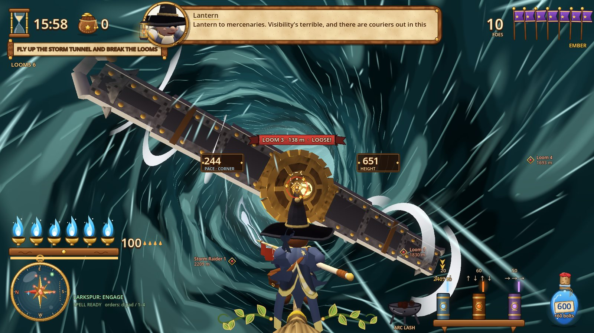
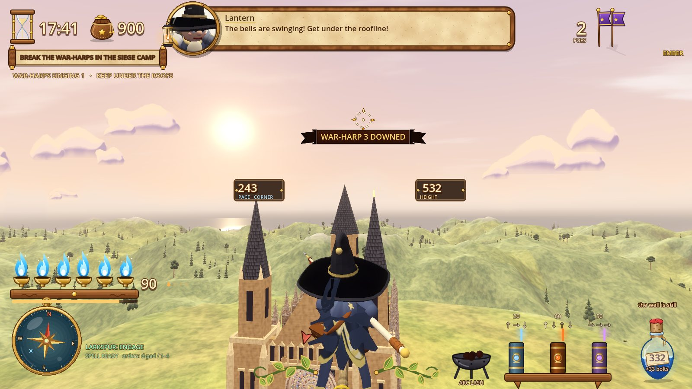
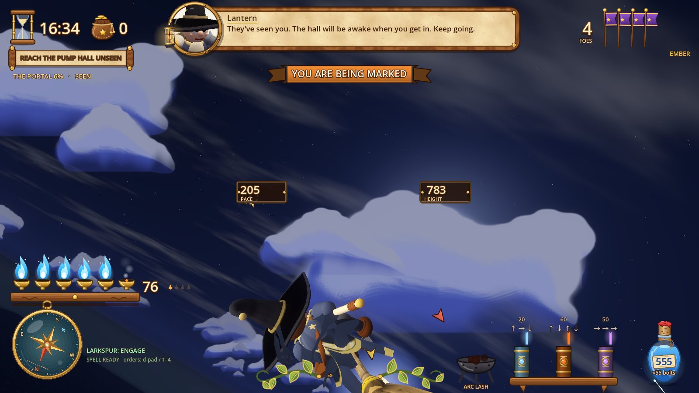
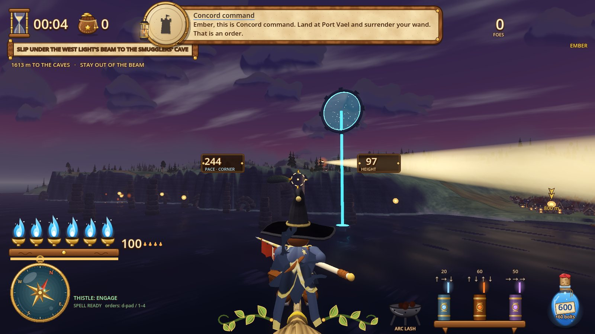
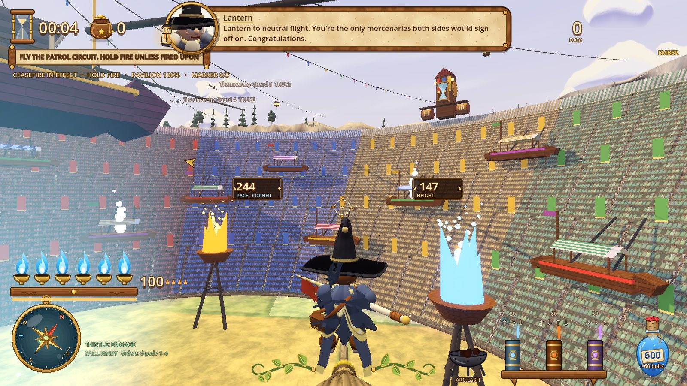
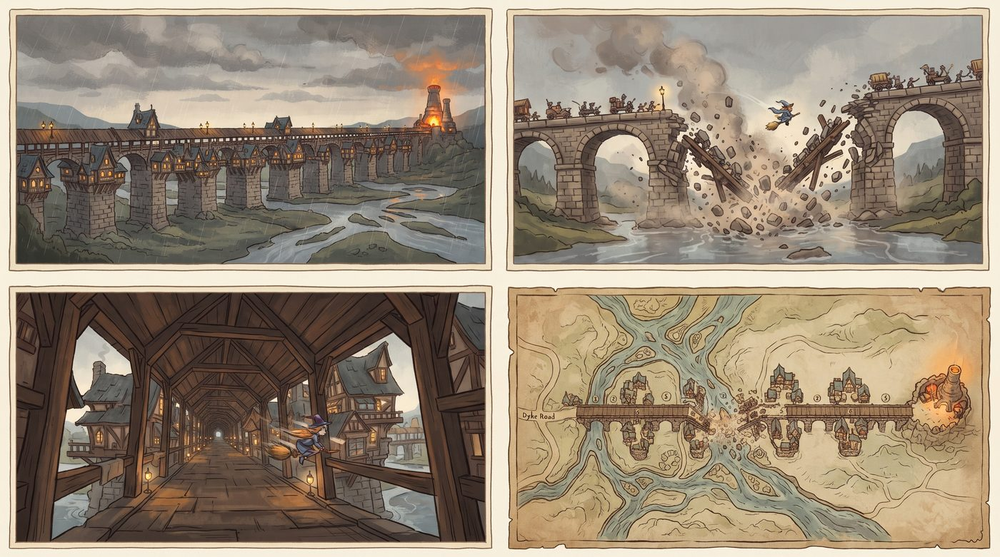
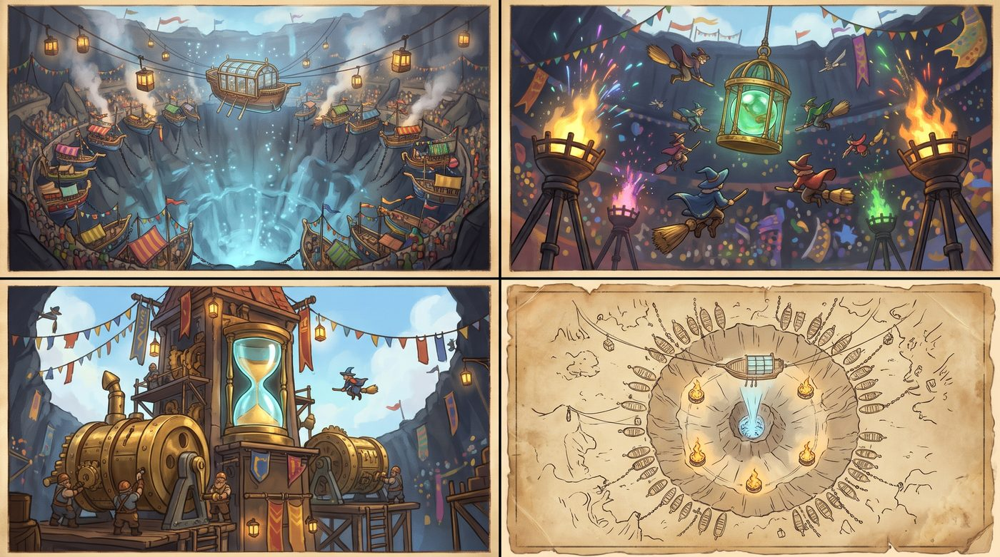
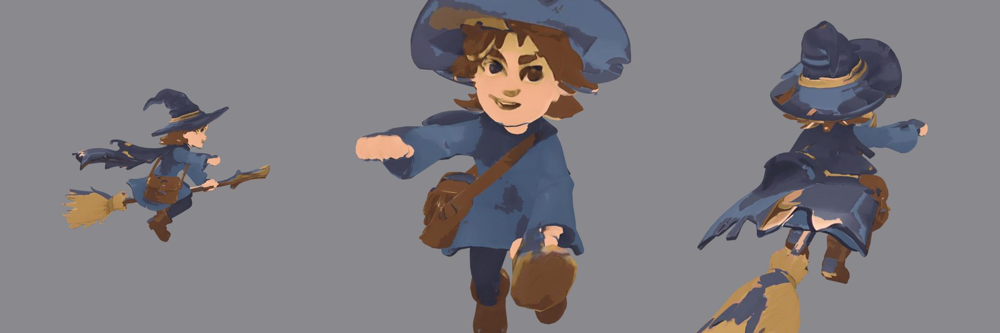

The game
An arcade aerial-combat campaign: lock-on dogfights, a radio drama in your ear and named rival aces, flown on brooms, wraiths, dwarven flying machines and dragons. Magic is the ammunition. Every spell you cast spends the same mana as your homing bolts, so a big spell costs you missiles.
- 16story missions over three acts
- 4factions: mages, wraiths, dwarves, dragons
- 16mounts, one shape per faction and class
- 19spells in the grimoire
Feel first
A new player turns, locks and fires in under a minute.
The sky is a stage
Radio chatter, named aces and a narrator turn each sortie into a scene.
Spells are ammunition
Magic replaces missiles one for one, so combat stays readable.
Choices leave marks
Spare or slaughter: the people you meet remember which.
The story is told backward. Before each mission the chronicler Odile Marsh interviews someone who was there: an enemy ace who survived, a dockworker, the officer on the radio. The player never speaks; everyone else defines them.
The world, in the game today
Every shot below is a real capture from the current build, taken by the game's own screenshot tests.











From concept sheet to level
Each map starts as a four-panel concept sheet (establishing view, signature moment, tight space, top-down map), then gets built and scored against it by a critic pass before it ships.
Glassreach

The Toll Span

The Kindling Bowl

The Skirts of the Crown

The Tripo pipeline
The levels are built from scripted Blender kits. The characters and mounts are where the game most needs a step up, and that's the job for Tripo. The pipeline is already working, tested on a free-tier export:
- ConceptA flat-coloured T-pose sheet with a back view, in the house style.
- TripoMulti-view to 3D, smart segmentation, rigging.
- Blender, scriptedCut to the game's budget (400k to 20k triangles), turned to face forward, colours snapped to the house palette.
- GodotDrawn with the game's painted light, so every model sits in the same storybook world.
- CriticEvery model is judged against the style guide before it's committed.

What the test taught us
- The back matters most. The chase camera sees a rider from behind. Single-image generation guesses the back and smears it; multi-view input fixes that.
- Flat colour concepts win. A T-pose concept with flat colour areas came out of Tripo clean. A painterly one needed its whole texture repainted.
- Riders and mounts apart. Generated separately, any rider can sit any of the four broom classes, and rigging can pose them.

Model roadmap
78 models, each with a written prompt, a concept image where one exists, and a save name the import scripts expect. Made in batches, most-seen first.
| Batch | What | Models |
|---|---|---|
| 1 | Player riders and mounts: mage brooms, wraith forms, dwarven machines and dragons in four classes each | 23 |
| 2 | Story cast and rival aces: Larkspur, Thistle, the Pale King, the Ninefold Choir, Black Heron, Ironbell, the Unbound Five | 18 |
| 3 | Enemy units, vessels and targets: war-sleds, barges, wagons, ward towers, Stormspires, the Crown's anchors | 19 |
| 4 | Landmark set pieces: one hero piece per map, from the lighthouse arch to the Hollow Crown | 15 |
| 5 | Hangar props for the four faction workshops | 3 |
| Total | 78 |
Swift
Light and quick: a lacquered racing broom, a wisp, a gyrocopter, a slim drake.
Lancer
Long and pointed: a spear-tipped broom, a serpent shroud, a biplane, a lance-horned wyrm.
Bulwark
Heavy and armoured: an iron-banded broom, a barrow shroud, a twin-rotor barge, a behemoth.
Hexer
Strange and ornate: a gnarled lantern broom, a crowned wraith, a rune-core tilt-rotor, a runescale wyrm.
The ask
A Tripo Creator Hub grant would cover the Pro plan for the production run: multi-view to 3D for clean backs, rigging for the riders and dragons, and commercial rights so the models can ship.
What Tripo gets back
- A shipped showcase. 78 Tripo models in one consistent art style, across a full 16-mission campaign.
- An open pipeline. The Blender clean-up scripts (cut to budget, face forward, snap to a palette) published for other Godot developers.
- A dev log. Before-and-after posts for each batch: concept, Tripo output, in-game result.
Timeline
- Month 1Batches 1 and 2: every rider, mount and named character.
- Month 2Batches 3 to 5: units, set pieces and hangars, then a full art pass on all 16 missions.
About
Wizard War Hero is made by Kyle Fenske, solo, in Godot 4. The game is in active development: all 16 missions are playable end to end, and the art is mid-way through the move from greybox to painted storybook.
Follow along on GitHub: github.com/fenskek